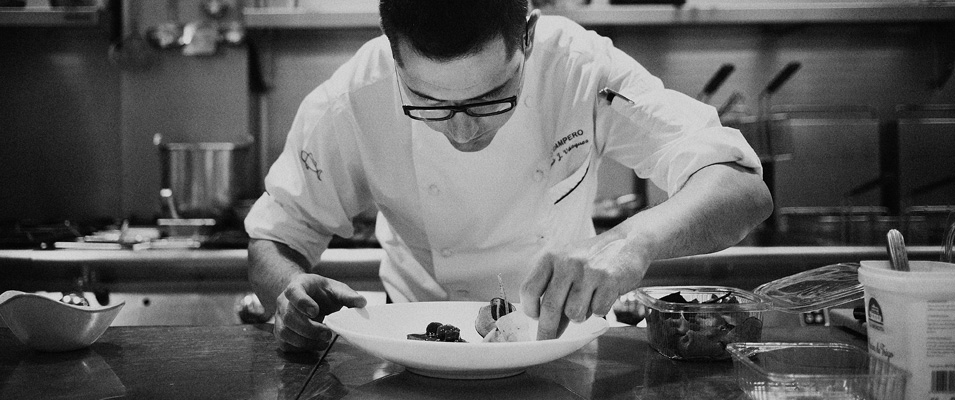
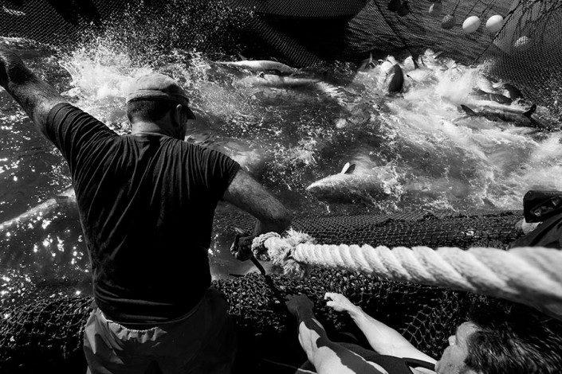

<div class="container">
  <div class="about">
    <div class="content row justify-content-center">
      <h4>
        <em>
          Nos gusta respetar y enaltecer el sabor de los productos de nuestra tierra con técnicas clásicas y modernas.
        </em>
      </h4>
      <br>
      <p>
        La cocina de La Almadraba aúna las recetas más tradicionales de la gastronomía barbateña, como es el atún encebollao o el atún en adobo, con nuevas técnicas y recetas de vanguardia. Pero ya se trate de una receta moderna o tradicional, en La Almadraba se aboga por la cocina sencilla, que mantenga el sabor de la materia prima, que aúne sabores, que sorprenda.
      </p>
      
      <p>
        Nuestra cocina es fruto de un estudiado equilibrio entre la gastronomía y el diseño pero fundamentada en la tradición y realizada siempre con productos de gran calidad.
      </p>
      <h4>
        <em>
          Atún Salvaje de Almadraba
        </em>
      </h4>
      <p>
        El Atún rojo salvaje tiene un sabor que no se olvida por que su carne jugosa, sabrosa, no pasa desapercibida para el paladar. Es uno de esos manjares que se encuentran en las costas de Cádiz. Entre los meses de abril y junio cruzan las aguas hacia el Mediterráneo para desovar, y es justo entonces cuando se permite su captura.
      </p>
          
    </div>
  </div>
</div>
